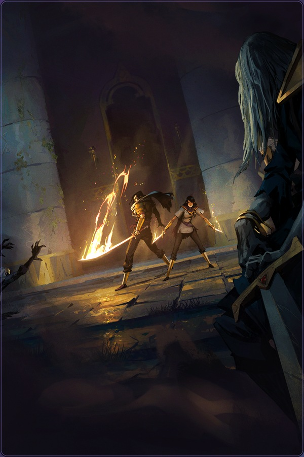

Home › Cup of Game › Nocturnal 2
Cup of Game · IndieNocturnal 2, il metroidvania di Sunnyside Games

Artwork © Sunnyside Games
· Redazione BENDREX
Nocturnal 2 è un metroidvania 2D di Sunnyside Games, uscito il 10 novembre 2026. È disponibile su Steam, e i testi sono in italiano.
Com'è il gioco
Il metroidvania è un genere preciso: una mappa sola da aprire piano piano, con poteri che sbloccano strade prima chiuse. Il primo capitolo era ambientato a Nahran; questo si svolge nella città di Ytash.
Non c'è una recensione nostra né un punteggio. A chi può piacere: a chi cerca qualcosa di raccolto, da finire in poche sessioni.
Requisiti e prezzo
- Minimi: Windows 10 64-bit, Intel Core i5-6600 o AMD Ryzen 3 1200, 8 GB di RAM, NVIDIA GTX 1050 o AMD Radeon RX 560X, DirectX 11, 3 GB di spazio, 1080p a 60 FPS.
- Consigliati: gli stessi valori, con 2 GB di VRAM sulla scheda video e impostazioni alte.
Minimi e consigliati sono quasi identici: anche un PC vecchio parte dalla stessa base.
Su Steam costa 8,09 €, con lo sconto del 10% da 8,99 €, rilevato il 17 novembre 2026. Il link qui sotto porta alla pagina Steam ufficiale, senza affiliazione.
In una riga: a questo prezzo è un rischio basso.